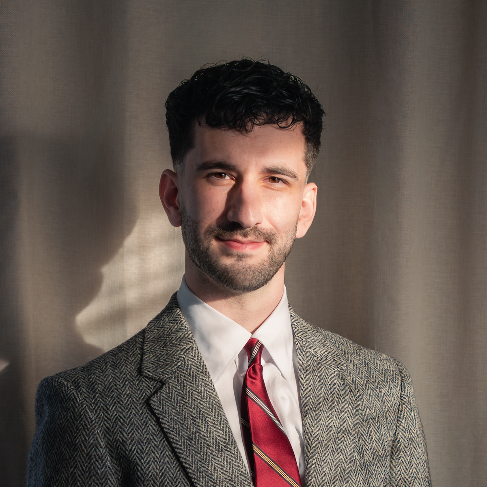

Andrew Strasberg
PhD Student in Political Science
Washington University in St. Louis
About
I am a third-year PhD student in the Department of Political Science at Washington University in St. Louis. I study American politics and political methodology.
My applied research interests lie in political communication, Congress, populism, and elections. Methodologically, I am interested in computational social science, text-as-data, and causal inference. My dissertation focuses on the “who,” “when,” and “why” of populism’s recent rise in American politics.
I received my B.S. in Public Administration from George Mason University in 2023 and my M.A. in Political Science from Washington University in St. Louis in 2025.
I wear two other hats–landscape photographer and soccer referee–which leave me with lots to do in my free time.